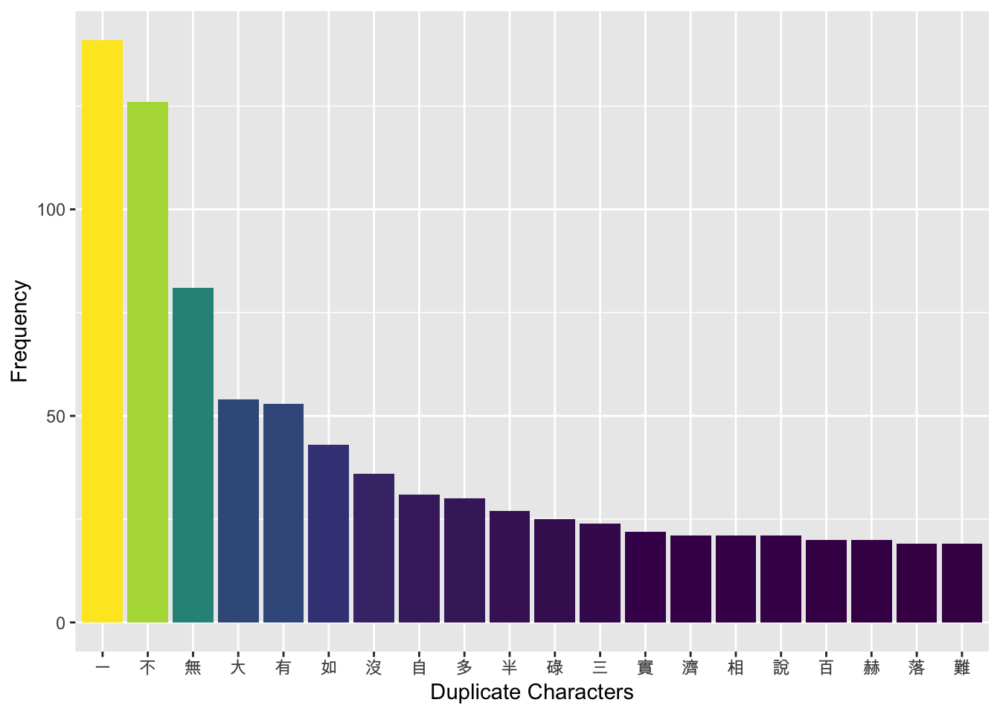
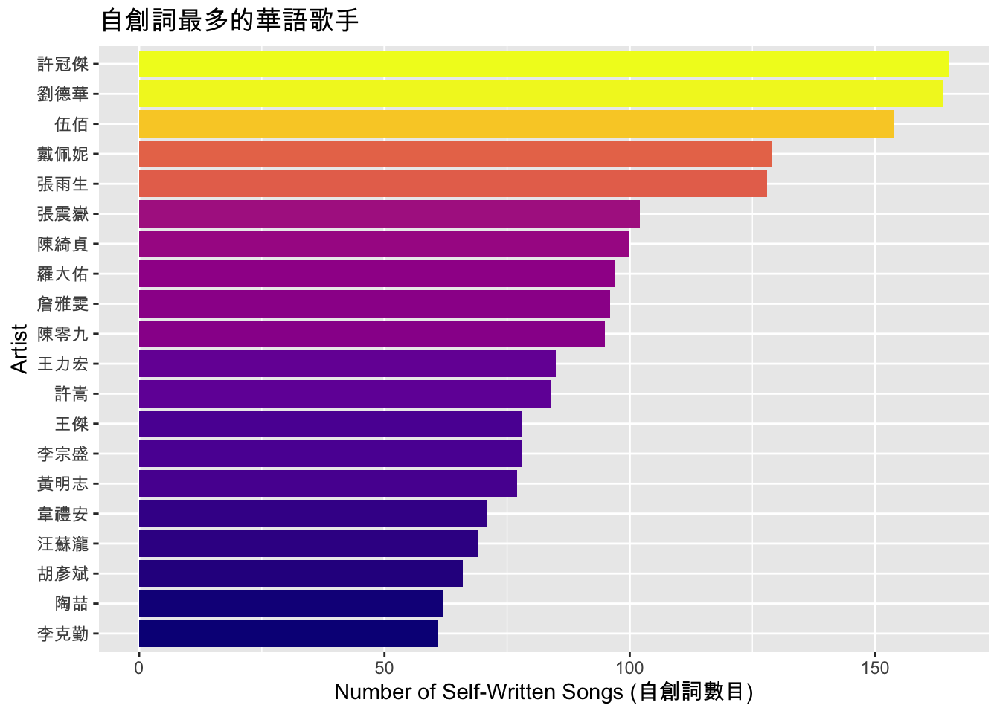
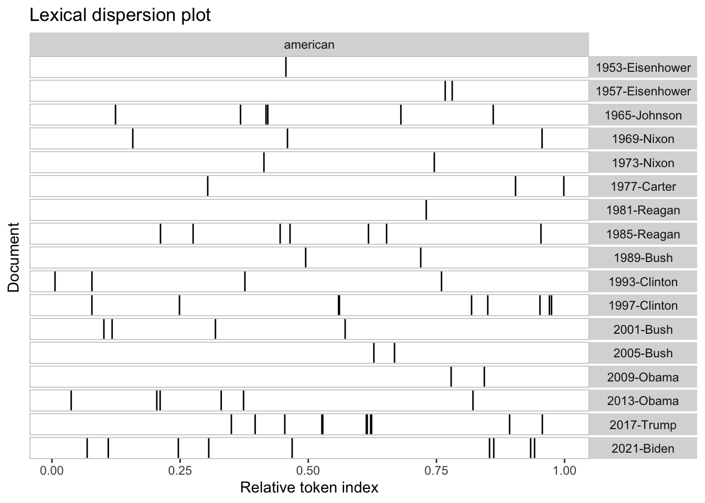
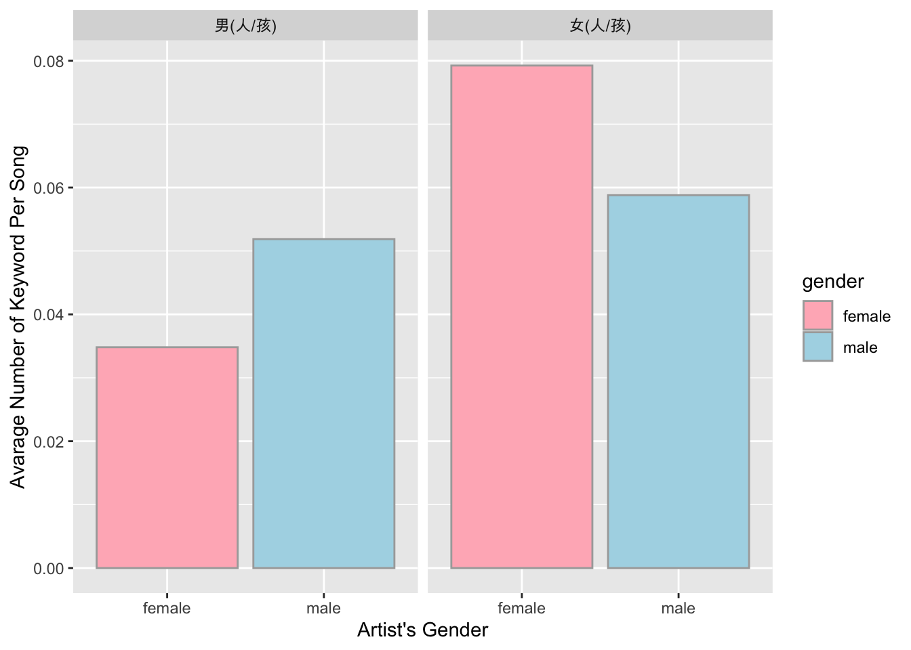

Chapter 13 Final Exam
13.1 Important Instructions
The final exam consists of three parts. There are 9 exercises (and one bonus activity) in total .
- Part I is about the use of control structures;
- Part II focuses on regular expressions;
- Part III analyzes a real dataset of Mandarin pop songs.
The total grade of the exam is 100%. Exercises 13.1 to 13.8 are 10% each; Exercise 13.9 is 20%. (The bonus activity is 20%.)
The exam requires two datasets. Please make sure that all necessary files have been properly downloaded from Drobpox Drive and saved under the
demo_datafolder of your working directory.demo_data/data-chinese-songs-mojim-exam.csvdemo_data/data-sentences.txt
Your submitted R script should follow the exact same format as your previously submitted assignments. Namely, you need to indicate clearly which parts of the codes respond to which exam question. Always specify clearly the exercise number. Codes without clear structured comments indicating the number of exercises will be ignored.
Please note that your submitted script will be evaluated by sourcing the entire script in the working directory (i.e., a directory with the
demo_datafolder containing all necessary data files). And the performance of your scripts will be assessed in terms of how close the outputs are to the sample results provided after each exercise.Please submit your R script by: 13:20, Fri., June 19, 2020 via Moodle.
Name your script as follows:
final-alvin.R(use your own name in the filename).You must write codes on your own. Asking others to write for you is absolutely forbidden. Any report of misconduct will be taken seriously.
13.2 Part I
Exercise 13.1 Please utilize the for-loop structure to create a tree with stars * in the R console as shown below. That is, your codes should print the stars in a shape of a tree.
Please wrap the tree-creating code as a function object, so that you can create trees of different sizes as shown below. You may have the size of the tree bottom as a parameter of the function.
- Examples of the Tree-creating Function:
createTree(base_size=5)
## *
## ***
## *****
createTree(base_size=10)
## *
## ***
## *****
## *******
## *********
createTree(base_size=15)
## *
## ***
## *****
## *******
## *********
## ***********
## *************
## ***************13.3 Part II
Exercise 13.2 Please load the text file demo_data/data-sentences.txt in R and create a tibble named sent, as shown below.
The tibble sent should have one column and 720 rows.
Now the tibble sent include 720 sentences. Please identify all words ending with ed from each sentence and add this information to the data frame sent as additional columns.
In particular, in your output, please include two additional columns:
pat_num: the number ofed-ending words for each sentencepat_string: all theed-ending words in the sentence (if there is more than oneed-ending word in the sentence, please concatenate all words into a long string using/as the delimiter)
In the output data frame, please only include sentences with at least one ed-ending word.
- The
senttibble:
- Senetences with at least one
ed-ending word:
There are 195 sentences with at least one ed-ending word in them.
Exercise 13.3 Now with all the 720 sentences in sent$string, please identify all the patterns of BE + ... + ED-ENDING WORD. That is, the match should start with any BE verb (e.g., is, am, are, was, were) and end with an ed-ending word. In between the BE and ed-ending word, there could be AT MOST two words.
=======================
The number of matches: 50
=======================
[1] "is often served" "were fed chopped"
[3] "is used" "was badly strained"
[5] "was cooked" "is a tool used"
[7] "was seized" "is used"
[9] "is a weed" "was spattered"
[11] "is red" "am hissed"
[13] "was fired" "was dull and tired"
[15] "is apple-shaped" "is used"
[17] "are pushed" "is head chopped"
[19] "are built of red" "are used"
[21] "were hired" "was covered"
[23] "am dropped" "were lined with colored"
[25] "is used" "is a dish served"
[27] "are paved" "is carved"
[29] "were led" "was bent and twisted"
[31] "is needed" "are walked"
[33] "were painted" "were mailed"
[35] "was pressed" "is tired"
[37] "was packed" "was barred, locked"
[39] "was crowded" "is wide grin earned"
[41] "am almost caused" "was carved"
[43] "was drilled" "were pierced"
[45] "am scared" "are jangled"
[47] "is tinged" "were stamped"
[49] "was jammed" "was robbed" Exercise 13.4 Now with all the 720 sentences in sent$string, please identify all words that occur in the X slot of the + X + of.
In other words, please identity all the words from the sentences if and only if they are directly preceded by the and directly followed by of.
=======================
The number of matches: 29
=======================
[1] "depth" "size" "edge" "product" "heat" "eyes" "front"
[8] "crew" "back" "skill" "middle" "stalk" "strip" "knee"
[15] "oath" "sill" "tenth" "limits" "form" "rear" "edge"
[22] "weather" "writer" "aid" "top" "length" "twelfth" "door"
[29] "part" Exercise 13.5 Following the previous exercise, please connect each match (i.e., words occurring in the X slot of the + X + of) back to its original context.
For each match found in the previous exercise (there are 29 matches in total), please identity their original contexts (i.e., from which sentence the match is found).
Your result should be a data frame including:
sent_id: the sentence unique numberstring: the original sentence stringmatches: the word in-betweentheandoffrom the sentence
13.4 Part III
Questions in Part III use the dataset in demo_data/data-chinese-songs-mojim-exam.csv. Please load the dataset into R and create a data frame named song_ch, as shown below.
This dataset includes 29730 Mandarin songs by different artists, as well as the metadata information related to each song. The columns refer to:
artist: the artist of the songtitle: the title of the songlyricist: information related to the lyricist(s) 作詞人 of the songcomposer: information related to the composer(s) 作曲人 of the songarranger: information related to the arranger(s) 編曲人 of the songlyric: the song lyricsgender: the gender of the artistlines: the number of lines in the original raw texts of the lyrics
Please answer the following questions based on this dataset.
Exercise 13.6 Please identify songs written by the three famous lyricists, i.e., 方文山, 林夕, and 姚若龍, and analyze their lyrics length (Note: They do NOT have to the sole lyricist of the song. Their collaborative works should be included in the analysis as well).
Please provide both summary statistics and descriptive graph to show their differences in the lyrics lengths (measured in terms of the log-transformed number of characters in the songs).
- Please use
nchar()to calculate the lyrics lengths (including all the symbols and punctauions). - Please use the log-transformed values of the character numbers for each song for analysis. For example, if a song has 100 characters, please use the value
log(100)as the length of the song. - In the summary statistics, please show (a) the number of the songs written by each lyricist, and (b) the means and standard deviations of the log-transformed lyrics lengths of the songs written by each lyricist. Please round all numbers in the table to the second decimal number.
- In the descriptive graph, please show the boxplots of the lyrics length distribution for the three lyricists.
- Summary Statistics
The summary statistics show that:
- 姚若龍 has 354 songs in our database, the mean length of which is 5.64 (log-transformed), and the standard deviation is 0.45;
- 方文山 has 194 songs in our database, the mean length of which is 6.06 (log-transformed), and the standard deviation is 0.47;
- 林夕 has 1731 songs in our database, the mean length of which is 5.72 (log-transformed), and the standard deviation is 0.41.
- Boxplots

Exercise 13.7 With the log-transformed lyrics length (i.e., log(nchar(lyrics)) of each song, please identify the top 10 artists, whose lyrics lengths are the longest.
- Please consider only artists with AT LEAST 100 songs in the database.
- Please compute the average number of characters of all the artist’s songs (cf. the
mean_log_lyrics_ncharcolumn below). - Please provide the relevant statistics for the analysis (cf. the sample data frames provided below).
- Please visualize the results with a plot as shown below for the top 10 artists.
There are 103 artists who have at least 100 songs in the database.
- Top 10 Artists Ranked According to their Average Lyrics Lengths
- Results Visualization

Exercise 13.8 In this exericse, we are going to investigate the proportion of each artist’s songs that are also written/composed by the artist in terms of both lyrics (i.e., 自創詞) and melody (i.e., 自創曲).
- Please identify all the songs whose lyricist(s) and composer(s) include the song’s artist. (Note: The artist does NOT have to the sole lyricist/composer of the song. Collaborative works should be included in the analysis as long as the artist is one of the contributers.)
- For each artist’s songs, identify the proportion of their self-written/composed songs in terms of both lyrics and melody, as shown in the summary statistics below.
- Visualize the results of the top 20 artists who have the most self-written/composed songs by lyrics and melody, as shown below.
In your result data frame, the columns should include:
N: The total number of the artist’s songsself_lyricist: The total number of the artist’s songs that are also self-written by the artist him/herself (自創歌詞的曲目數)self_com: The total number of the artist’s songs that are also self-composed by the artist him/herself (自創歌曲的曲目數)self_lyricist_per: self_lyricist/Nself_com_per: self_com/N
- Top 20 Artists who Self-Create the Lyrics of their Songs

- Top 20 Artists who Self-Create the Melody of their Songs

Exercise 13.9 In this exercise, we will analyze an interesting pattern of word uses. We will investigate whether male artists use more/less “男人/男孩” in their songs, or alterantively, whether female artists use more/less “女人/女孩”.
- Please identify the number of occurrences of “男人/男孩” for each song (cf. the
man_numcolumn below). - Please identify the number of occurrences of “女人/女孩” for each song (cf. the
woman_numcolumn below). - Please present summary statistics of the average occurrence of “男人/男孩” and “女人/女孩” for all male and female artists.
- Please visualize the results in a bar plot as shown below.
- Please do NOT worry about word segmentation. Any literal strings that match with the target characters (i.e., “男人/男孩” and “女人/女孩”) would be our candicates.
男人/男孩 or 女人/女孩 in LyricsBefore you create the summary statistics, you need to identify the number of occurrences of the target words. In addition to the original columns of the song_ch, two additional columns should be included:
man_num: the number of男人/男孩in the lyrics of the songwoman_num: the number of女人/女孩in the lyrics of the song
The following data frame only shows the songs with AT LEAST one occurrence of 男人/男孩 or 女人/女孩. This data frame is provided for you to check your intermediate outputs.
- Summary Statistics
Based on the summary statistics, we know that on average there are 0.0348 occurrences of “男人/男孩” per song for all the female artists’ songs, and 0.0519 occurrences of “男人/男孩” for all the male artists’ songs.
As for the other keyword, on average there are 0.0792 occurrences of “女人/女孩” per song for all the female artists’ songs, and 0.0588 occurrences of “女人/女孩” for all the male artists’ songs.
- Bar Plots of the Average Number of Keywords By Artist’s Genders
Our preliminary results indicate that:
- male artists’ songs show more occurrences of 男人/男孩 when compared with female artists’ songs.
- female artists’ songs show more occurrences of 女人/女孩 when compared with male artists’ songs.
- In general, there are more occurrences of 女人/女孩 in both male and female artists’ songs.

In the final exercise above, it is clear that the next step is to perform a statistical analysis on the data, which in turn should give you more statistical grounds to make meaningful conclusions.
I would like to take this as a bonus activity. If you are interested, please provide your R code for the statistical analysis, as well as the results of the statistical analysis and your conclusions on whether male/female artists use more/less 男人/男孩 or 女人/女孩.
The bonus activity is 20%.
13.5 Afterword
I would like to take this opportunity to thank you all for participating in this course. This has been a joyful semester to me (although the pandemic did add a bit challenge to the course).
I hope you do learn things from this course and look forward to see some of you developing your own career as a data scientist in the future:)